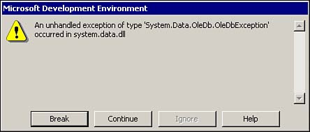
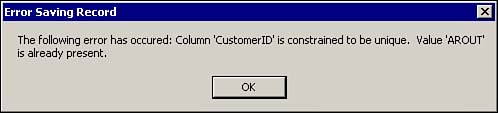

When dealing with database tasks, you are going to get runtime errors. In .NET, we call the various types of errors you can get exceptions. This How-To shows examples of what exceptions could occur and how to handle them using the Try, Catch, and Finally statements.
Adding and deleting records is fine, but what happens if an error occurs? You tried to delete an existing company, and got the screen that appears in Figure 1.10.

How do you make it so errors are handled gracefully within the application using bound controls?
Error handling is one of the most important aspects of working with data, between when a user is entering data and updating the server. If you don't have proper error handling, your system will, in the best situation, give an ugly error message, and in the worst, blow up and put bad data in your system. In Visual Studio .NET, errors are classes called exceptions. Many different (inherited) types of exceptions exist.
Run-time exceptions can occur in just about any part of your application. They can be handled by using Try...Catch...Finally or they can be unhandled, where you will see the error in Figure 1.11.

Take a look at a common way to trap exceptions shown in Listing 1.15.
Private Sub MySub()
Try
'-Code to be handled here
Catch dataException as Exception
MessageBox.Show(dataException.Message)
Finally
'-Code that will occur regardless of if an error occurs.
End Try
End Sub
Following are some basic points to help you when working with exceptions and Try...Catch...Finally blocks:
The name of the exception object can be whatever you want it to be. dataException was just used as an example.
Specific types of exceptions inherit from the base class of System.Exception. OleDbException is one of those classes, and you will see an example of using this class in the following steps.
You can use the Throw statement within a Catch statement to throw the exception back up to a calling subroutine.
You can use the When clause on the Catch statement to trap for specific exceptions.
When multiple Catch statements are used, each one is executed unless an End Try or End Sub is placed within a Catch block, as in this How-To.
You can use multiple Catch statements to handle various possible exceptions that can occur.
You will see an example of these bullets in the following steps.
Taking the form with which you have been working, you are going to modify it to trap exceptions when the record is being saved (either for additions or editing) and when the record is deleted. You will also add some code in the event when closing the form.
Modify the code in the Click event of the command button called btnSave. You will surround the SaveRecord routine call with a Try...Catch...End Try block. If an exception occurs, the Show method of the MessageBox class is called, passing the Message property of the Exception object called saveException. Next, the subroutine is exited. If no errors occur, then life goes on, and so does the subroutine.
Private Sub btnSave_Click(ByVal sender As System.Object, _
ByVal e As System.EventArgs) Handles btnSave.Click
Try
'- Save the information
SaveRecord()
Catch saveException As Exception
MessageBox.Show("The following error has occurred: " & _
saveException.Message, "Error Saving Record")
Exit Sub
End Try
'- Disable the text boxes
ActivateEditing(False)
If mbAddNew Then
LoadList()
RefreshIndividual()
mbAddNew = False
End If
End Sub
Modify the SaveRecord routine to "throw" the exception up to the btnSave_Click subroutine, or whatever happens to have called the SaveRecord routine. Following is the SaveRecord subroutine with the new Try...Catch...End Try block added, along with the Throw statement.
Private Sub SaveRecord()
Try
'- Use the BindingContext class to end the current editing so
' that we can update the server.
Me.BindingContext(Me.dsCustomerIndividual, _
"Customers").EndCurrentEdit()
'- Perform the requested task at the dataset
' level using the data adapter
odaCustomerIndividual.Update(dsCustomerIndividual, "Customers")
'- By accepting the changes, the data gets sent back to the server
dsCustomerIndividual.AcceptChanges()
Catch saveException As Exception
Throw saveException
End Try
End Sub
Now it's time to deal with adding exception handling to the btnDelete Click event, as seen next. The Try statement is used to wrap the code that performs deletion of the data. The code then uses a Catch statement to check whether the exception that occurs is a specific OleDbException, 3621, which is an error having to do with trying to delete a record when related records exist in another table. Note that you could-and in fact should-assign this to a constant value. Because delException has been caught as an OleDbException, you can look at the NativeError property of the first error in the Errors collection to get the actual OleDb error number. If the error is not 3621, then the exception is trapped with the next Catch statement, and a messagebox is displayed. If errors occur, then the subroutine is exited before the final lines of code are executed.
Private Sub btnDelete_Click(ByVal sender As System.Object,
ByVal e As System.EventArgs) Handles btnDelete.Click
Try
'- Mark the row for deletion using the RemoveAt
' method of the BindingContext
Me.BindingContext(Me.dsCustomerIndividual,
"Customers").RemoveAt(Me.BindingContext(Me.dsCustomerIndividual,
"Customers").Position)
'- Perform the requested task at the dataset
' level using the data adapter
odaCustomerIndividual.Update(dsCustomerIndividual, "Customers")
'- By accepting the changes, the data gets sent back to the server
dsCustomerIndividual.AcceptChanges()
Catch delException As System.Data.OleDb.OleDbException _
When delException.Errors(0).NativeError = 3621
MessageBox.Show("An error occurred because of related order records.",
"Error Deleting Customer", _
MessageBoxButtons.OK, MessageBoxIcon.Exclamation)
Exit Sub
Catch delException As Exception
MessageBox.Show(delException.Message, "Error Deleting Customer",
MessageBoxButtons.OK, MessageBoxIcon.Exclamation)
Exit Sub
End Try
'- Reload the list
LoadList()
'- Display the first record
RefreshIndividual()
'- Disable the text boxes
ActivateEditing(False)
End Sub
When an exception occurs within the Try...Catch...End Try block, the Catch statements are compared when a When clause is used or when the code is simply executed. If a Throw statement is used, then an execution is thrown back up a level to the Try...Catch...End Try block containing the call to the routine where the Throw statement occurred. You can see an example of this in Figure 1.11.
Microsoft has gone to great length to let you control how you handle exceptions in .NET with the various languages. You can be as creative as you need to by using the Try...Catch...End Try block with all the clauses available.
Exceptions bring back plenty of information so that you can create pretty slick error handling. You can use exceptions to create a centralized routine that logs errors, or even one that e-mails exception information to you from your applications.